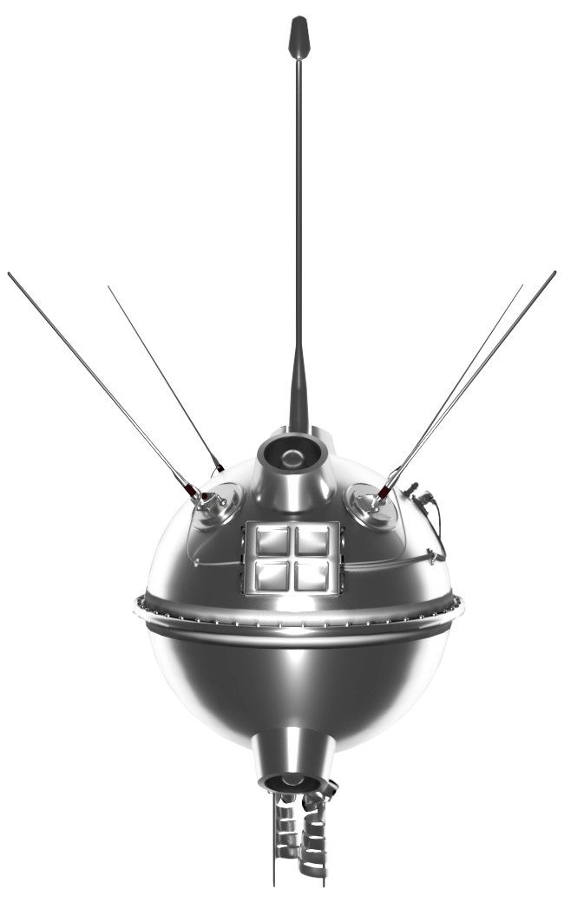

De eerste succesvolle maanlanding
Loena 2 was een Russische onbemande maanvlucht uit 1959. Met deze geslaagde vlucht scoorden de Russen een grote primeur: voor het eerst landde een door mensen vervaardigd voorwerp op de maan. Deze verkenner was bijna identiek aan Loena 1, maar iets zwaarder. Het toestel onderzocht de maanbodem niet, maar maakte slechts een harde landing. Desalniettemin gold de missie als eclatant succes: ze bewees dat de mensheid vanaf nu technisch in staat was om het maanoppervlak te bereiken. De Loena 2 werd gelanceerd op 12 september 1959 met een SS-6 Sapwood-draagraket vanaf Tjoeratam op Bajkonoer. Het lanceervenster was tijdgebonden door de rotatie van de Aarde. Loena 2 steeg op vanaf de op dat moment van de maan afgekeerde zijde. De vlucht zou ± 36 uur in beslag nemen. Op dat moment stond de maan in de Sovjet-Unie boven de horizon (een vlucht van 12 uur of 60 uur was theoretisch dus ook mogelijk). Op een hoogte van 113.000 km ontbrandde het natriumgas, zette uit met een snelheid van bijna 1 km/sec en veroorzaakte een oranje gloed door inwerking van zonnestralen. De maximale lichtsterkte was gelijkwaardig aan een ster van de vierde of vijfde magnitude. De maximale diameter van de gaswolk bedroeg 650 km, doch bij 400 km werd het lichtschijnsel te zwak om goed te kunnen observeren. Deze kunstmatige komeet vloog voor een waarnemer op de grond door het sterrenbeeld Waterman.
